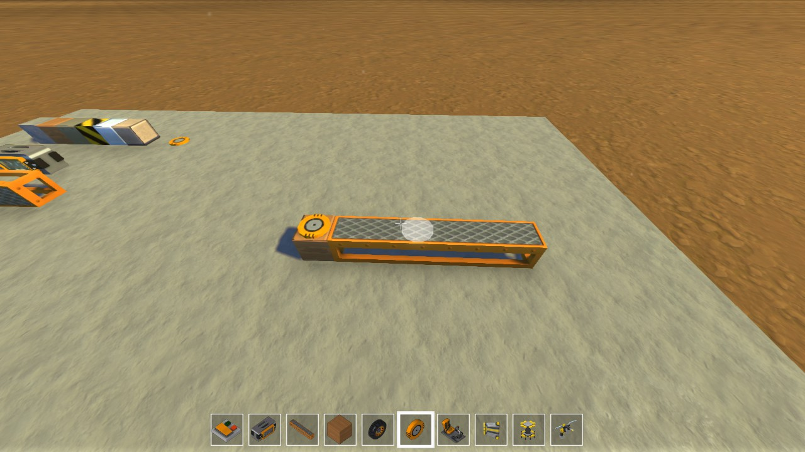
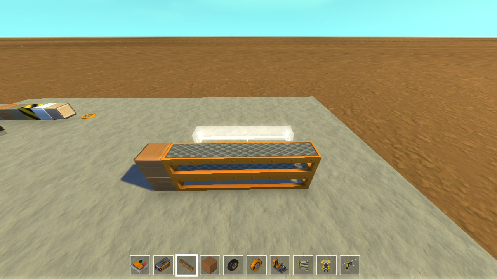
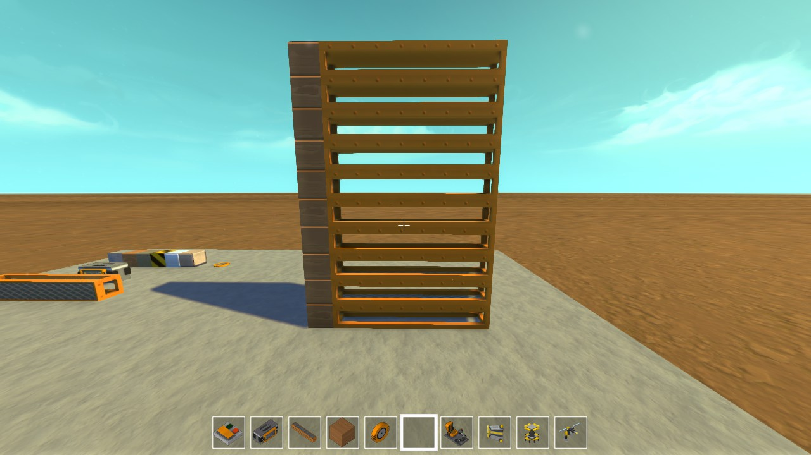
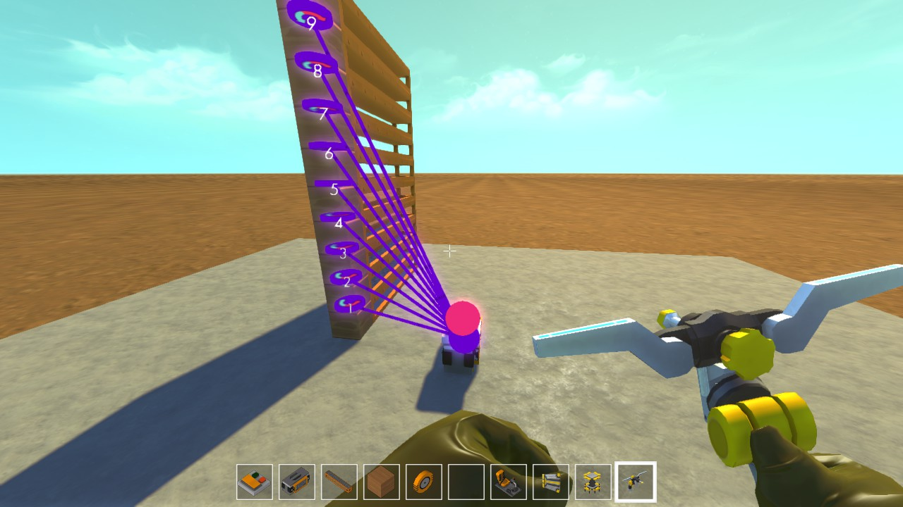
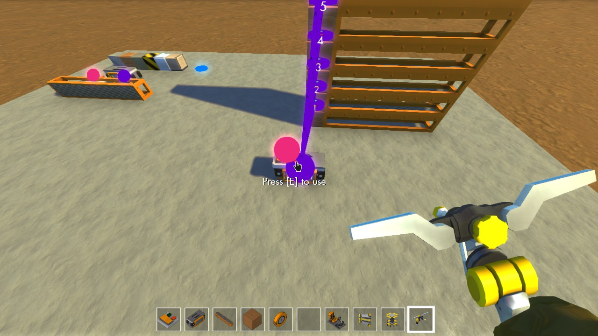
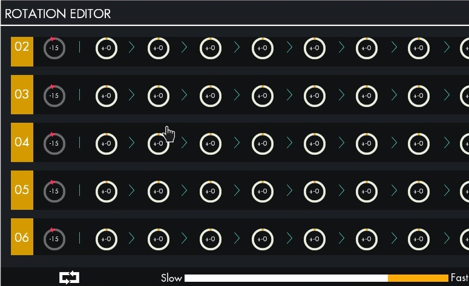
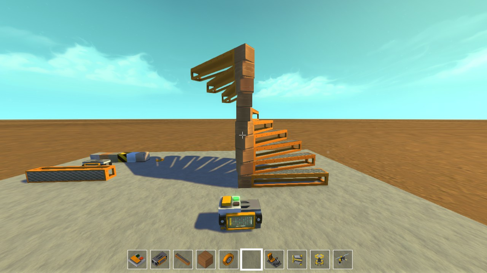
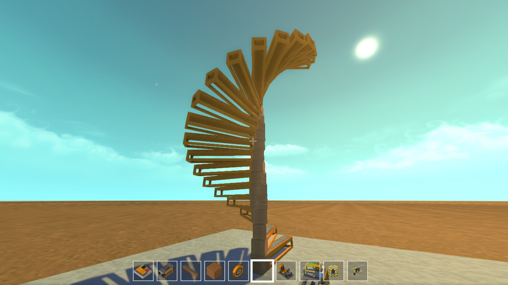

First place a Block and a Staircase Step
Secondly place a Bearing on top of the Block
Place a Block on top of the bearing and attach the Staircase Step to the Block you just placed
Redo step 2 and 3 until you build it to the height you want, you made need to stand on the lift to get higher.
First you need to connect the controller to the bearings
 Also connect the switch*
*USE THESE SETTING IF USEING A SWITCH*
*IF NOT USING A SWITCH USE THESE SETTINGS*
It should look like this if you flip the switch or the default position if you dont use a switch
Also you can change the height you will just need more controllers